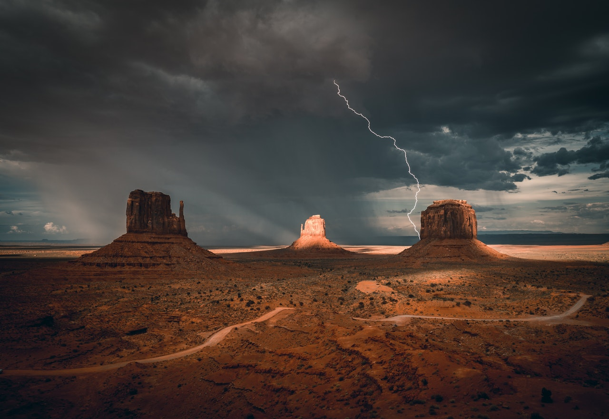

Neben dem klassischen Porträtfoto ist die Landschaftsfotografie vermutlich eines der ältesten Themen im großen Themenpool der Fotografie. Wichtige Fotografen wie z. B. Ansel Adams oder Edward Weston haben die Landschaftsfotografie bekannt gemacht und dazu beigetragen, dass sie sich zu einer eigenen Kunstform im Bereich der Fotografie etabliert hat.
